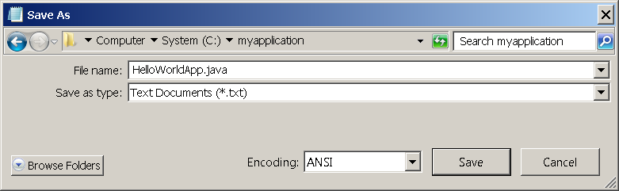

Lección: La Aplicación "¡Hola Mundo!"
"¡Hola Mundo!" para Microsoft Windows
¡Es hora de escribir su primera aplicación! Las siguientes instrucciones son para usuarios de Windows Vista, Windows 7, y Windows 8. Instrucciones para otras plataformas están en "¡Hola Mundo!" para SO Solaris y Linux y "¡Hola Mundo!" para el EID Netbeans .
Si encuentra problemas con las instrucciones en esta página, consulte Problemas Comunes (y Sus Soluciones) .
Una Lista de Comprobación

Para escribir su primer programa, necesitará:
-
El Kit de Desarrollo de Java SE 8 (KDJ 8)
Usted puede descargar la versión para Windows ahora. (Asegúrese de descargar el KDJ, no el EEJ). Consulte las instrucciones de instalación.
-
Un editor de texto
En este ejemplo, usaremos Notepad, un editor simple incluido con las plataformas Windows. Usted puede adaptar facilmente estas instrucciones si usa un editor de texto diferente.
Estos dos punto son todo lo que usted necesitará para escribir su primera aplicación.
Creando Su Primera Aplicación
Su primera aplicación, HolaMundoApl, simplemente visualizará el saludo "¡Hola mundo!".
-
Crear un fichero fuente
Un fichero fuente contiene código, escrito en el lenguaje de programa Java, que usted y otros programadores pueden entender. Puede usar cualquier editor de texto para crear y editar ficheros fuente.
-
Compilar el Fichero Fuente y generar un Fichero .class
El compilador del lenguaje de programación Java (
javac) toma su fichero fuente y traduce su texto en instrucciones que la máquina virtual de JAva puede entender. Las instrucciones contenidas en este fichero son conocidas como bytecodes. -
Ejecutar el programa
La herramienta de lanzamiento (
java) usa la máquina virtual de Java para ejecutar su aplicación.
Crear un Fichero Fuente
Para crear un fichero fuente, tiene dos opciones:
-
Puede salvar el fichero
HolaMundoApl.java.class. -
O, puede seguir las siguientes (más largo) instrucciones.
Primero, inicie su editor. Usted puede lanzar el editor Notepad desde el menú Inicio seleccionando Programas > Accessorios > Notepad. En un documento nuevo, escriba el siguiente código:
/**
* La clase HolaMundoApl implementa una aplicación que
* simplemente imprime "¡Hola Mundo!" a la salida estándar.
*/
class HolaMundoApl {
public static void main(String[] args) {
System.out.println("¡Hola Mundo!"); // Muestra la cadena.
}
}
Sea Cuidadoso Cuando Escriba


Nota: Escriba todo el código, comandos, y nombres de fichero exactamente como se muestra. Tanto el compilador (
javac) como el lanzador (java) son sensitivos-al-caso,
así que debe usar las mayúsculas y minúsculas consistentemente.
HolaMundoApl no es lo mismo que holamundoapl.
Salve el código en un fichero con el nombre HolaMundoApl.java. Para hacer esto en el Notepad,
primero elija el item de menú File > Save As. Entonces, en el cuadro de diálogo Salvar Como:
-
Usando la lista desplegable Salvar en , especifique la carpeta (directorio) donde salvará su fichero.
En este ejemplo, el directorio es
miaplicacionen el discoC. -
En el campo de texto Nombre de Fichero, escriba
"HolaMundoApl.java", incluyendo las comillas. - Desde el lista desplegable Salvar Como Tipo , elija Documentos de Texto (*.txt).
- En la lista desplegable Codificación , deje la codificación como ANSI.
Cuando ha acabado, el cuadro de diálogo debería verse como este.

El diálogo Salvar Como justo antes de pulsar Salvar.
Ahora pulse Salvar, y salga de Notepad.
Compilar el Fichero Fuente y generar un Fichero .class
Abra un shell, o ventana de "comandos". Puede hacer esto desde el menú Inicio elijiendo
Ejecutar... e introduciendo cmd. La ventana de shell debería ser similar a
la siguiente figura.

Una ventana shell.
La consola muestra su directorio actual. Cuando usted abre una consola, su directorio actual es usualmente su directorio home en Windows XP (como es mostrado en la figura precedente).
Para compilar su fichero fuente, cambie su directorio actual al directorio donde su fichero está guardado. Por
ejemplo, si su directorio fuente es miaplicacion en el disco C , escriba el siguiente
comando en la consola y presione Intro:
cd C:\miaplicacion
Ahora el prompt de la consola debería cambiar a C:\miaplicacion>.
Nota:
Para cambiar a un directorio en un disco diferente, debe escribir un comando extra: el nombre del disco. Por
ejemplo, para cambiar al directorio miaplicacion en el disco D, deberá introducir
D:, como sigue:
C:\>D: D:\>cd miaplicacion D:\miaplicacion>
Si usted introduce dir en la consola, debería ver su fichero fuente, como sigue:
C:\>cd miaplicacion
C:\miaplicacion>dir
Volume in drive C is System
Volume Serial Number is F2E8-C8CC
Directory of C:\miaplicacion
2014-04-24 01:34 PM <DIR> .
2014-04-24 01:34 PM <DIR> ..
2014-04-24 01:34 PM 267 HolaMundoApl.java
1 File(s) 267 bytes
2 Dir(s) 93,297,991,680 bytes free
C:\miaplicacion>
Ahora está listo para compilar. En la consola, ejecute el siguiente comando y presione Intro.
javac HolaMundoApl.java
El compilador ha generado un fichero bytecode, HolaMundoApl.class. En la consola, escriba
dir para ver el nuevo fichero que fue generado como sigue:
C:\miaplicacion>javac HolaMundoApl.java
C:\miaplicacion>dir
Volume in drive C is System
Volume Serial Number is F2E8-C8CC
Directory of C:\miaplicacion
2014-04-24 02:07 PM <DIR> .
2014-04-24 02:07 PM <DIR> ..
2014-04-24 02:07 PM 432 HolaMundoApl.class
2014-04-24 01:34 PM 267 HolaMundoApl.java
2 File(s) 699 bytes
2 Dir(s) 93,298,032,640 bytes free
C:\miaplicacion>
Ahora que tiene un fichero .class , puede ejecutar su programa.
Si encuentra problemas con las instrucciones en este paso, consulte Problemas Comunes (y Sus Soluciones) .
Ejecutar el Programa
En el mismo, directorio, escriba el siguiente comando en la consola:
java -cp . HolaMundoApl
Debería ver lo siguiente en su pantalla:
C:\miaplicacion>java -cp . HolaMundoApl
¡Hola Mundo!
C:\miaplicacion>
¡Enhorabuena! ¡Su programa funciona!
Si encuentra problemas con las instrucciones en este paso, consulte Problemas Comunes (y Sus Soluciones) .